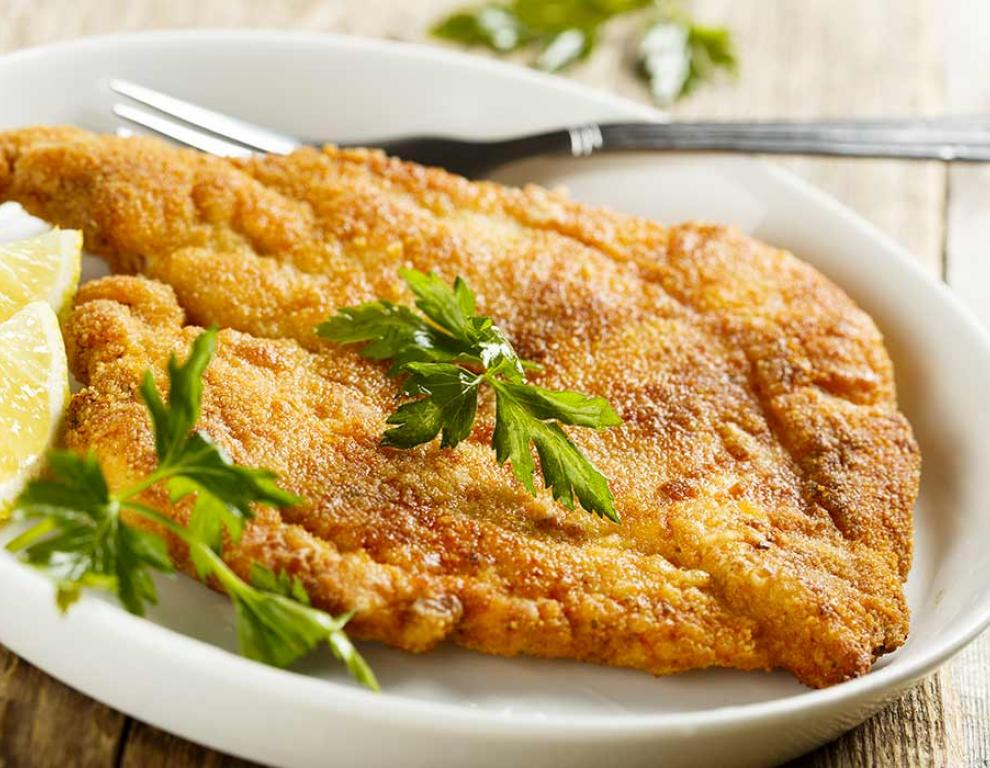

Cotoletta

Description
Cotoletta alla Milanese, is one of the most well known dishes of the Lombardy cuisine, and can be found everywhere in the city of Milan.
From a Michelin-starred restaurant, to your common café selling quick lunches, you are bound to find a crumbed veal cutlet in some shape or form.
Ingredients
The following ingredients are for 4 people:
- 4 veal steaks, boneless
- 3 eggs
- 300g bread crumbs
- 200g flour
- 200g butter
- Salt
Steps
- Trim away excess fat and make small nicks around the edges of the meat to prevent them from curling up as they cook.
- Whisk the eggs in a bowl, season with salt.
- Pass each cutlet in the flour, then in the eggs, then in the breadcrumbs, pressing with your hands to make the breadcrumbs adhere to the cutlet as much as possible.
- Melt the butter in a frying pan over high heat. Fry the cutlets until golden brown, about 3 minutes each side.
- Transfer to paper towels to drain any excess fat. Sprinkle with salt and serve warm.
Back to Recipes Index